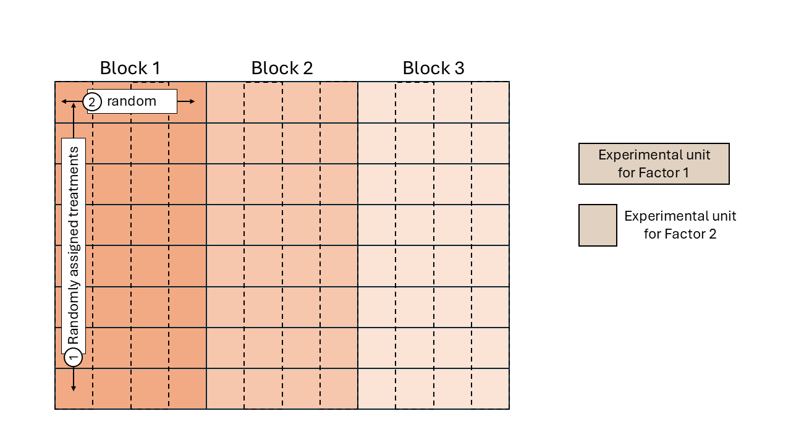
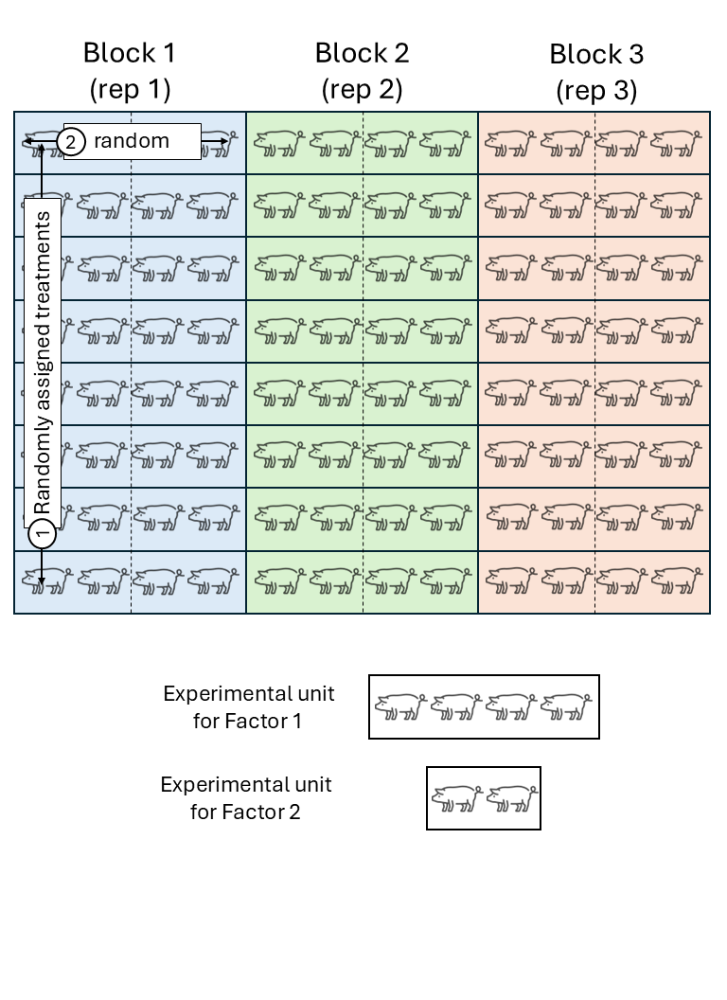
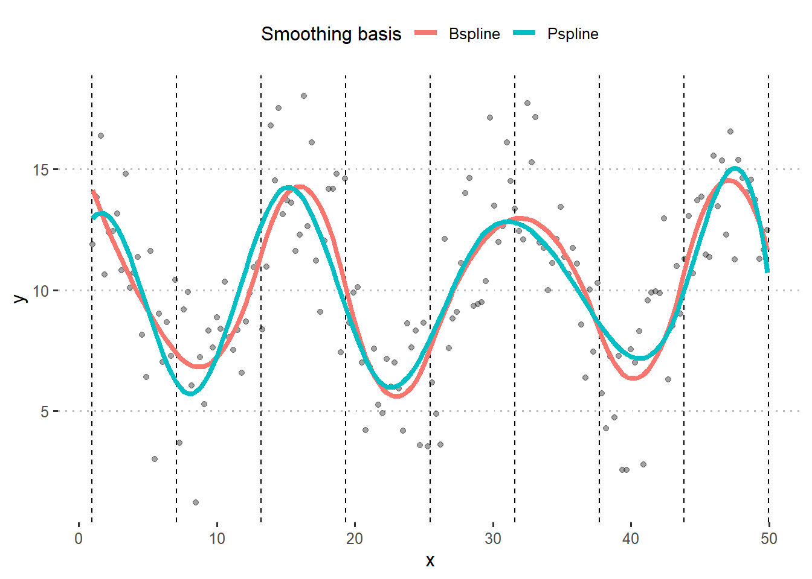

Day 13 Practice: Hierarchical (Multilevel) Designs
June 26th, 2025
13.1 Review: Hierarchical Designs
- Remember the definition of experimental unit? The smallest unit to which a treatment is independently applied.
- Sometimes we find that there are different sizes of experimental units.
- In such cases, it is important to identify the different experimental units and the randomization scheme. We may be in front of a multilevel design.

Figure 13.1: Schematic description of a field experiment with a split-plot design

Figure 13.2: Schematic description of a swine experiment with a split-plot design
- Sometimes, these differences in the sizes of EUs are not that easy to notice.
- More details in Analysis of Messy Data - Ch5.
13.1.1 Remember our example:
Rows and beds (aka columns) probably looked somewhat like this:

library(tidyverse)
library(agridat)
library(ggpubr)
data("durban.splitplot")
df <- durban.splitplot
theme_set(theme_minimal())
p_blocks <-
df %>%
ggplot(aes(bed, row))+
geom_tile(aes(fill = block))+
geom_tile(color = "black", fill=NA)+
coord_fixed()
p_wholeplot <-
df %>%
ggplot(aes(bed, row))+
geom_tile(aes(fill = fung))+
geom_tile(color = "black", fill=NA)+
coord_fixed()
p_splitplot <-
df %>%
ggplot(aes(bed, row))+
geom_tile(aes(fill = gen), show.legend= F)+
coord_fixed()
ggarrange(p_blocks, p_wholeplot, p_splitplot, ncol = 1, nrow = 3)
13.2 Building the ANOVA skeleton using design (aka topographical) and treatment elements
|
|
|